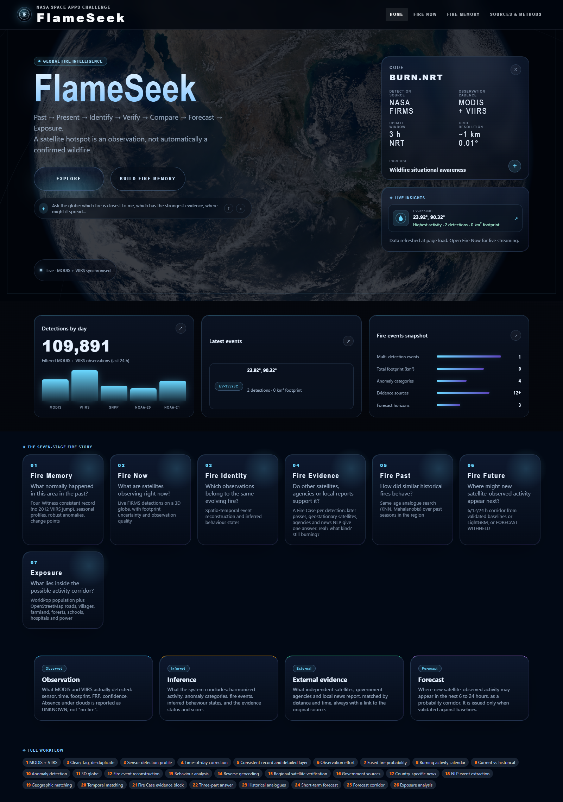
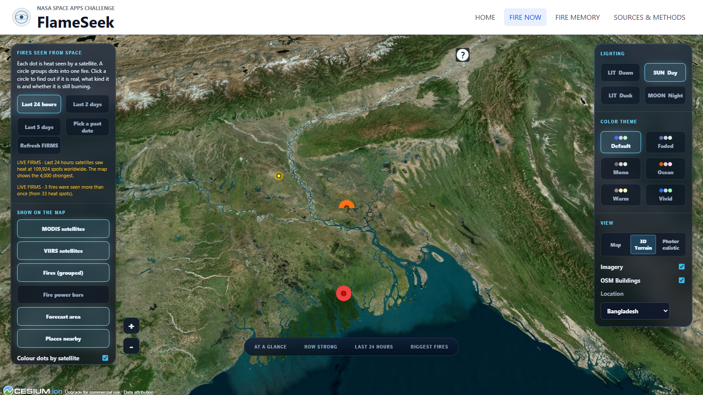
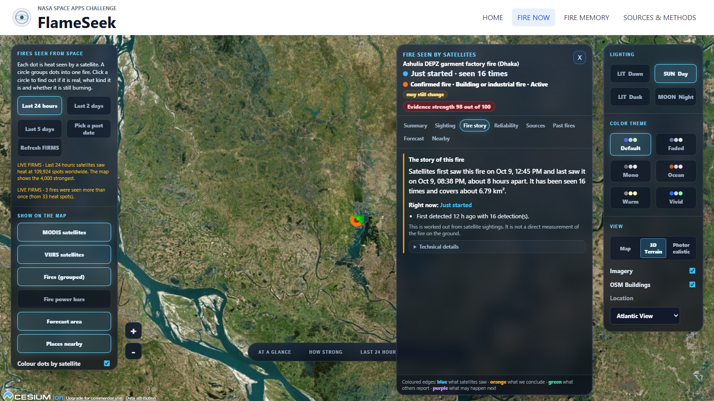
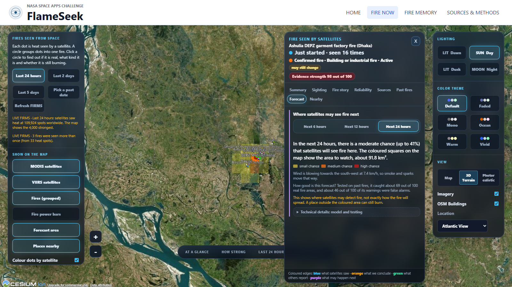

This report explains the complete FlameSeek project from the user problem to the technical implementation. It is written so that a beginner can understand the idea, while still documenting the architecture, algorithms, APIs, setup, tests, limitations, and future scope.
| 1. Executive Summary | What FlameSeek does and why it matters |
| 2. Project Overview and Problem Statement | The real-world problem, users, and objectives |
| 3. Proposed Solution | The seven-stage fire story and trust model |
| 4. System Architecture | Frontend, API, intelligence services, pipeline, and data |
| 5. End-to-End Workflow | How a raw detection becomes an explainable result |
| 6. Detailed Feature Explanation | Every major user-facing capability |
| 7. Data Sources and Sensor Harmonization | How different witnesses are compared fairly |
| 8. Algorithms and Decision Logic | Events, anomalies, evidence, forecast, and exposure |
| 9. Technology Stack and Code Organization | Languages, frameworks, and important files |
| 10. API and Data Flow | Endpoints and background jobs |
| 11. Installation and Operation | Beginner-friendly setup and usage |
| 12. Testing and Verification | Automated tests and build status |
| 13. Strengths, Limitations, and Ethics | What results mean—and what they do not mean |
| 14. Future Improvements and Conclusion | Practical roadmap and final assessment |
FlameSeek is a full-stack, evidence-driven platform for monitoring, verifying, explaining, comparing, and forecasting satellite-observed fire activity. It combines observations from NASA MODIS and VIIRS instruments with orbit information, cloud/observation context, regional satellite products, government sources, news, historical patterns, wind-based forecasting, and exposure data.
The platform addresses a common misunderstanding: a thermal hotspot detected from space is not automatically a wildfire. It may be a crop burn, industrial heat source, controlled burn, or a detection affected by cloud, sensor resolution, viewing angle, and revisit timing. FlameSeek therefore separates four kinds of information:
What a satellite directly detected: sensor, time, location, footprint, confidence, and fire radiative power (FRP).
What the system calculates: events, harmonized activity, anomalies, behaviour states, and evidence status.
Independent support from other satellites, agencies, and news, with source provenance.
Where new satellite-observed activity may appear in 6, 12, or 24 hours—or a clear “forecast withheld” result.
The main innovation is the Four-Witness Fire Intelligence approach. Terra MODIS, Aqua MODIS, Suomi NPP VIIRS, NOAA-20 VIIRS, and NOAA-21 VIIRS are treated as witnesses with different strengths and blind spots. Their observations are cleaned, de-duplicated, corrected for time of day and sensor sensitivity, adjusted for observation opportunity, and fused into a consistent interpretation.

Satellites provide global fire observations, including places where ground monitoring is limited. However, raw hotspot feeds are difficult to interpret correctly. Different instruments have different pixel sizes, sensitivity levels, overpass times, swath widths, orbit drift, and cloud-related gaps. A higher number of detections may mean more fire activity, but it can also mean that a newer or more sensitive sensor observed the area more often.
Emergency planners, researchers, journalists, communities, and non-specialist users need a system that answers more than “where are the red dots?” They need an explainable answer to these questions:
A useful solution must also report uncertainty. Cloud cover, missed overpasses, weak signals, sensor differences, and missing external reports must not be silently converted into false certainty.
| Objective | How FlameSeek addresses it |
|---|---|
| Global situational awareness | Near-real-time MODIS and VIIRS observations on a 3D globe. |
| Long-term comparability | A MODIS-sensitivity consistent record plus a separate detailed VIIRS layer. |
| Evidence-based verification | Later passes, geostationary review, government reports, and matched news. |
| Place-based intelligence | Country, region, district, forest, polygon, rectangle, or radius selection. |
| Transparent decisions | Provenance, quality labels, score breakdowns, explanations, and source links. |
| Actionable outlook | Historical analogues, validated short-term forecast corridors, and exposure layers. |
Potential users include disaster-management teams, environmental agencies, researchers, local authorities, journalists, NGOs, students, and members of the public. FlameSeek is an intelligence and decision-support tool; it is not a replacement for official emergency warnings or field confirmation.
The proposed solution is a connected seven-stage workflow. Each stage answers one clear human question while preserving the difference between direct observation and system interpretation.
| Stage | Question answered | Main result |
|---|---|---|
| Fire Memory | What normally happened here in the past? | Consistent record, seasonal profile, calendar, anomalies, and change points. |
| Fire Now | What are satellites observing now? | Live footprints and events on a globe, with quality and uncertainty. |
| Fire Identity | Which observations belong to one evolving fire? | Spatio-temporal event reconstruction and inferred behaviour state. |
| Fire Evidence | Do independent sources support the event? | A time-ordered Fire Case with reliability-weighted evidence. |
| Fire Past | How did similar events behave? | Same-age historical analogues and outcomes. |
| Fire Future | Where might activity be observed next? | 6/12/24-hour probability corridor or “forecast withheld.” |
| Exposure | What lies inside the possible activity corridor? | Population, settlements, roads, land, protected areas, and facilities. |
FlameSeek does not hide missing data. It uses quality and sufficiency states such as UNKNOWN, AMBIGUOUS, and INSUFFICIENT OBSERVATION. Fire Cases remain provisional until all expected satellite passes have occurred or 24 hours have elapsed. A fire type is named only when its evidence score exceeds the configured decision margins.
The repository includes three synthetic Bangladesh walkthroughs: a garment-factory fire at Ashulia, paddy-straw burning at Shibganj in Bogura, and a forest fire in the Sundarbans’ Chandpai range. They demonstrate staged evidence, historical analogues, forecasts, and exposure without relying on live services. Names, reports, and figures in these scenarios are invented and labelled as demo data.
FlameSeek follows a layered architecture. The browser provides interactive maps and explanations; the FastAPI backend manages requests and analysis jobs; intelligence modules perform domain-specific calculations; the scientific pipeline builds consistent datasets; caches and processed files reduce repeated work.
The frontend is a React 18 and TypeScript application built with Vite. It uses Cesium for the 3D globe, Leaflet for 2D geographic views, Plotly for analytical charts, and React Router for page navigation. Large pages are lazy-loaded so that users do not download every mapping library on the first visit.
The FastAPI application exposes typed endpoints for hotspots, places, events, Fire Memory, evidence, outlook, data sources, saved results, harmonized snapshots, and long-running jobs. Pydantic schemas validate areas of interest, dates, sensors, and response structures.
Separate Python modules handle event reconstruction, quality, geocoding, witness fusion, evidence matching, Fire Cases, historical analogues, forecasting, exposure, and seasonal analysis. This modular design makes individual methods testable and replaceable.
The pipeline preserves raw files, writes interim and processed products, partitions large datasets by day, stores versioned parameters, and exports snapshots for the website. This separates reproducible scientific processing from interactive web requests.
When a user selects a place, the page loads in stages: saved exact-query results where available, live 24-hour hotspots, a quick one-year Fire Memory result, a full historical result, and the place pipeline. Expensive downloads and computations are cached and shared so that repeated requests become faster.
Long operations return a job identifier instead of freezing a request. The frontend polls /api/jobs/{id} and displays queued, running, completed, or failed status with progress. Identical work may reuse an existing job, reducing duplicate NASA requests.
The home page introduces the seven-stage model and the four information layers. It presents recent detections, events, system status, and direct entry points to the live globe and historical analysis.
Fire Now displays recent satellite observations and reconstructed events on a Cesium globe. Users can choose time windows such as 24 hours, 48 hours, five days, or a historical date. The globe supports far-side occlusion, event selection, observation footprints, forecast corridors, and exposure layers.

Users can search for a country, state, district, forest, or protected area through OpenStreetMap Nominatim. They may also draw a rectangle or polygon or define a radius. The same area model is reused across live, historical, and place-based analysis.
Fire Memory asks, “What is normal for this area?” It produces a consistent historical record, daily and monthly summaries, seasonal profiles, anomaly categories, change points, sensor agreement, observation effort, and provenance. Long-term charts use harmonized activity rather than simply counting all raw detections.
Fire DNA summarizes the characteristic fire pattern of a place: typical active months, peak month, recurrence, annual activity, spatial concentration, sensor consistency, and selected-month comparison with its historical median. The page supports CSV-style exports for further study.
The harmonized Fire Events page lists events for a selected window and place. It maps each event using a burned-ground or observation-derived outline rather than treating every record as an isolated point. Event attributes include time span, footprint, energy, detections, association confidence, and inferred behaviour.
Every reconstructed event can become a Fire Case. The evidence panel combines:
Evidence items vote for candidate categories using reliability weights. The interface separates original sources, generated summaries, and system interpretation.

FlameSeek finds events that were similar at the same age. This prevents an unfair comparison between a new event and a fully developed historical one. Candidate events are compared with K-nearest neighbours using a shrinkage-regularized Mahalanobis distance, which accounts for scale and correlation among features. The result includes analogue outcomes rather than promising that history will repeat.
The forecast service compares persistence, seasonal, wind-only, and LightGBM models using temporal and spatial holdouts. Metrics include Brier score, Brier skill score, probability of detection, false-alarm ratio, critical success index, footprint intersection-over-union, and calibration. A 6-, 12-, or 24-hour probability corridor is shown only when the selected model passes the configured skill rules; otherwise the result is FORECAST WITHHELD.

The exposure module asks what lies inside a possible activity corridor. It can summarize WorldPop population and OpenStreetMap settlements, roads, farmland, forests, protected areas, schools, hospitals, power infrastructure, and other critical facilities. Exposure indicates presence inside a corridor; it does not claim damage or evacuation need.
The place page combines live detections, Fire Memory, the full scientific pipeline, hotspot recurrence, seasonality, change, unusual activity, neighbouring context, and risk indicators. Every answer names its source and status so the user can distinguish computed data from unavailable or provisional results.
Dedicated pages explain the harmonization method and list data sources. Harmonized pages support English and Bangla through the language context and ?lang=bn. The interface also provides light/dark theming and responsive navigation.
| Data family | Examples | Purpose |
|---|---|---|
| Primary fire observations | NASA FIRMS MODIS and VIIRS | Location, time, confidence, FRP, scan/track, satellite witness. |
| Orbit and observation context | CelesTrak/current TLEs, Skyfield, ERA5 cloud proxy | Expected passes, coverage, viewing opportunity, and clear-sky looks. |
| Regional satellite corroboration | GOES, Landsat, Sentinel-2, EFFIS, CWFIS; review links for Himawari/Meteosat | Independent context where machine-readable access is available. |
| Government and disaster sources | GDACS, NIFC WFIGS, NSW RFS, country source directory | Official incident or controlled-burn evidence. |
| News | GDELT and optional NewsAPI | Place/time-matched reporting, cause, impact, and infrastructure clues. |
| Population and map context | WorldPop and OpenStreetMap | Exposure, settlements, roads, facilities, land use, and place search. |
VIIRS is more detailed and sensitive than MODIS, but it begins later. Mixing all detections directly can create artificial increases around sensor launch dates. FlameSeek therefore uses a MODIS-sensitivity consistent record for long-term trends and anomalies, while keeping the complete VIIRS observations for detailed current mapping.
The continuity test checks raw and consistent ratios across major sensor-start dates. The hide-one-witness test temporarily removes NOAA-20 and checks how well the fused result predicts its detections using AUC and Brier score compared with a historical-rate baseline.
| Capability | Method | Beginner-friendly meaning |
|---|---|---|
| Footprints | Scan × track rectangles, ground-track orientation, fractional grid attribution | A detection covers an area; it is not a perfect point. |
| Events | Spatio-temporal linking with 25 km extent and 14-day caps | Nearby observations close in time are grouped into an evolving event. |
| Anomalies | Robust median/MAD z-score | Current activity is compared with the usual value without letting extreme years dominate. |
| Change points | PELT mean-shift detection | The system finds statistically detected shifts in the long-term level. |
| Observation quality | Six quality classes and Observation Sufficiency Score | Results reflect whether the satellites had enough clear opportunities to observe. |
| Evidence matching | Distance, time, event-type, source reliability, and contradiction rules | Nearby and timely independent reports count more than weak or distant matches. |
| Type decision | Top category above 50% and at least 20 points ahead | The system names a type only when one explanation clearly leads. |
| Historical analogues | KNN + shrinkage Mahalanobis distance | Find similar past events while accounting for feature scales and relationships. |
| Forecast | Baselines versus LightGBM, spatial/temporal holdouts, skill gates | A forecast is displayed only after comparison with simple alternatives. |
FRP is an estimate of the rate of radiant energy emitted by the fire at observation time, measured in megawatts. FlameSeek retains FRP but avoids treating it as an exact burned area. When observations are assigned fractionally to grid cells, the pipeline checks energy conservation so that the total FRP is not accidentally created or lost by geometry processing.
A satellite sees different fire behaviour in morning, afternoon, and night. FlameSeek calculates local solar time and converts measurements to an Aqua 13:30-equivalent value using learned daily curves. This makes different overpass times more comparable.
Each cell starts from its historical fire rate for the month. A credible detection increases the odds. A clear overpass with no detection decreases the odds according to that sensor’s expected detection chance. A cloudy pass is ignored rather than treated as proof of no fire.
| Layer | Technologies |
|---|---|
| Frontend | React 18, TypeScript, Vite, React Router, Cesium, Leaflet, Plotly, GSAP, Lucide icons. |
| Backend | Python, FastAPI, Uvicorn, Pydantic, HTTPX, NumPy, scikit-learn, LightGBM, Skyfield, Shapely. |
| Scientific pipeline | Pandas/GeoPandas ecosystem, Parquet/GeoParquet, NumPy, statistical calibration and validation modules. |
| Testing | Pytest for Python and Node-based frontend request/benchmark tests. |
| Deployment | Dockerfiles and Docker Compose; Nginx serves the production frontend. |
FlameSeek/ ├── frontend/ React/TypeScript user interface │ └── src/ │ ├── pages/ Main application pages │ ├── components/ Globe, AOI, event panel, charts, verification │ ├── api/ Backend request clients │ └── types/ TypeScript API types ├── backend/ FastAPI application and intelligence modules │ ├── routers/ HTTP endpoint groups │ └── tests/ Backend unit and integration tests ├── pipeline/ Reproducible scientific harmonization pipeline ├── forecast/ Forecast baselines, model, and evaluation ├── config/ Versioned settings and processing windows ├── params/ Calibrated model/curve parameters ├── data/ Raw, interim, and processed datasets ├── outputs/ Reports, figures, diagnostics, and snapshots ├── tests/ Scientific pipeline tests ├── docs/ Methodology and design decisions └── docker-compose.yml Backend + frontend deployment
| Endpoint | Purpose |
|---|---|
GET /api/current_hotspots | Recent satellite observations. |
GET /api/events | Reconstructed fire events for a time/area filter. |
GET /api/events/{id} | Details for one event. |
GET /api/events/{id}/case | Current Fire Case state. |
POST /api/events/{id}/evidence | Start evidence gathering as a job. |
POST /api/events/{id}/outlook | Start analogue, forecast, and exposure analysis. |
POST /api/fire_memory | Build historical place intelligence. |
POST /api/place_pipeline | Run the scientific pipeline for a selected place. |
GET /api/jobs/{id} | Read progress and the result of a background job. |
GET /api/places/search | Find an administrative or named geographic area. |
GET /api/places/reverse | Describe a coordinate using nearby place context. |
GET /data-sources | List source availability and descriptions. |
GET /health | Simple backend health check. |
Interactive OpenAPI documentation is available at /docs while the backend is running.
An area of interest can contain a bounding box, GeoJSON Polygon or MultiPolygon, or a centre with radius. It may also carry a human-readable name and a kind such as place, polygon, radius, or box. The backend validates radius limits and reuses this contract across features.
cd backend pip install -r requirements.txt # Create backend/.env and add FIRMS_MAP_KEY=your_key python -m uvicorn main:app --host 127.0.0.1 --port 8000
cd frontend npm install npm run dev # Open http://127.0.0.1:5173
# From the FlameSeek directory # Ensure FIRMS_MAP_KEY is available in the environment docker compose up --build
The backend is exposed on port 8000 and the frontend on port 5173.
conda env create -f environment.yml conda activate flameseek python run_pipeline.py python -m pytest tests
Raw FIRMS CSV files belong in data/raw/ and are not modified. The pipeline writes cleaned detections, footprints, events, grids, calibration products, figures, and reports to the interim, processed, parameter, and output directories.
The repository contains scientific, backend, simulated-data, and frontend tests. Covered topics include calibration, footprints, energy conservation, FRP time adjustment, event caps, partitioned processing, synchronization gates, quality on empty days, translation, drift, Himawari phases, live globe output, place runs, Fire Cases, evidence, saved results, job reuse, search performance, snapshot APIs, and area intelligence.
| Check | Result | Meaning |
|---|---|---|
npm run build | PASSED | TypeScript compilation and the Vite production build completed successfully; 3,698 modules were transformed. |
| Bundle review | Warning | Cesium and Plotly chunks exceed Vite’s 500 kB warning threshold. Routes are lazy-loaded, but further vendor chunking is a performance opportunity. |
python -m pytest tests backend/tests -q | Environment-blocked | Collection in the system Python 3.14 environment stopped because the dedicated geospatial/plotting dependencies were absent and backend tests require the backend import path. This is not recorded as a product test failure. |
flameseek Conda environment from environment.yml, run pipeline tests from the repository root, and run backend tests with backend on the Python import path. The backend runtime requirements alone do not include the full GeoPandas/Matplotlib scientific stack./health, /docs, place search, and one live hotspot request.Observation, inference, external evidence, and forecast are explicitly separated.
Harmonization avoids treating more sensitive sensors as automatic increases in fire activity.
Evidence has source, time, reliability, and interpretation rather than one unexplained label.
The same event connects present observations, past analogues, future activity, and exposure.
Raw data is preserved, parameters are versioned, and outputs identify their provenance.
Unknown, ambiguous, insufficient, provisional, and withheld states are part of the design.
FlameSeek should support—not replace—official emergency agencies and field observations. Users should not interpret “no detection” as “no fire,” a probability corridor as a guaranteed spread path, or exposure as confirmed harm. Original source links and timestamps should be checked before making high-impact decisions.
The core data is environmental and geographic rather than personal. API keys should remain in environment files and must not be committed to source control. Production deployments should restrict CORS origins, add TLS, protect administrative endpoints, validate external content, limit request rates, monitor cache storage, and record model/data versions with each decision.
| Priority | Improvement | Expected benefit |
|---|---|---|
| 1 | Validate evidence and fire-type scores against a labelled multi-country dataset. | Convert evidence strength into better-calibrated confidence and reveal regional bias. |
| 2 | Add live fuel, land-cover, moisture, and higher-resolution weather inputs to forecasting. | Move from activity extrapolation toward more physically informed fire behaviour. |
| 3 | Operationalize official satellite cloud/fire masks where credentials permit. | Improve observation sufficiency and clear-miss interpretation. |
| 4 | Expand machine-readable national-agency connectors and source-health monitoring. | Increase confirmation coverage and make outages visible. |
| 5 | Split Cesium and Plotly vendor bundles more aggressively and measure real-device performance. | Reduce initial load time and improve mobile usability. |
| 6 | Add authentication, saved AOIs, alerts, audit logs, and role-based operational views. | Support agencies and recurring monitoring workflows. |
| 7 | Add continuous integration using the documented Conda and Node environments. | Make scientific and web verification repeatable for every change. |
| 8 | Conduct accessibility and multilingual review beyond the current EN/Bangla foundation. | Improve clarity for diverse users and assistive technologies. |
FlameSeek is more than a hotspot map. Its central contribution is a transparent chain of reasoning from raw satellite observation to event identity, external evidence, historical comparison, forecast, and exposure. The system treats satellites as imperfect witnesses, preserves uncertainty, and explains why a result was produced.
The project is technically ambitious: it combines a modern geospatial web interface, an asynchronous API, a reproducible scientific pipeline, sensor calibration, evidence fusion, historical analysis, machine-learning forecasts, and population/infrastructure context. Its strongest design choice is epistemic honesty—showing what was observed, what was inferred, what came from independent evidence, and what remains uncertain.
| Term | Meaning |
|---|---|
| AOI | Area of interest selected by search, boundary, polygon, box, or radius. |
| FIRMS | NASA Fire Information for Resource Management System. |
| MODIS | Moderate Resolution Imaging Spectroradiometer on Terra and Aqua. |
| VIIRS | Visible Infrared Imaging Radiometer Suite on Suomi NPP and NOAA satellites. |
| FRP | Fire Radiative Power, an estimate of radiant energy rate in megawatts. |
| TLE | Two-Line Element set used to propagate a satellite orbit. |
| MAD | Median Absolute Deviation, a robust measure of typical variation. |
| PELT | A change-point algorithm used to find statistically detected shifts. |
| Brier score | A measure of probability-forecast error; lower is better. |
| Provenance | Information explaining where a value came from and how it was produced. |